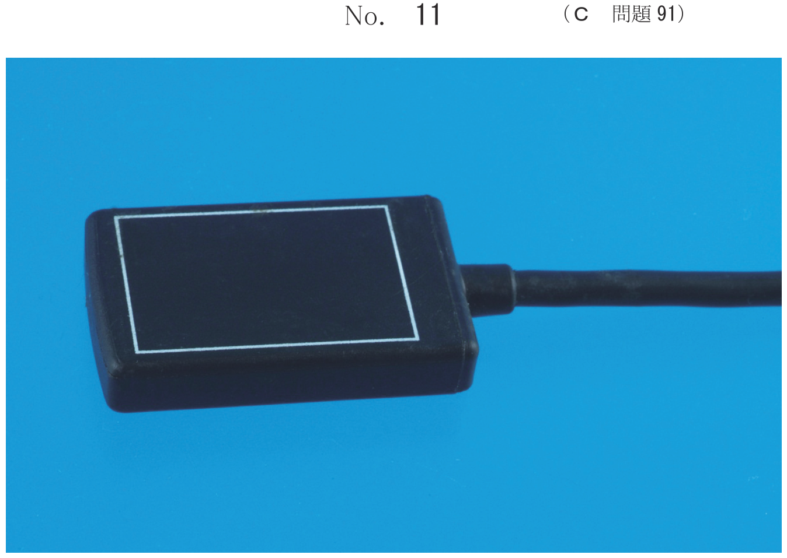
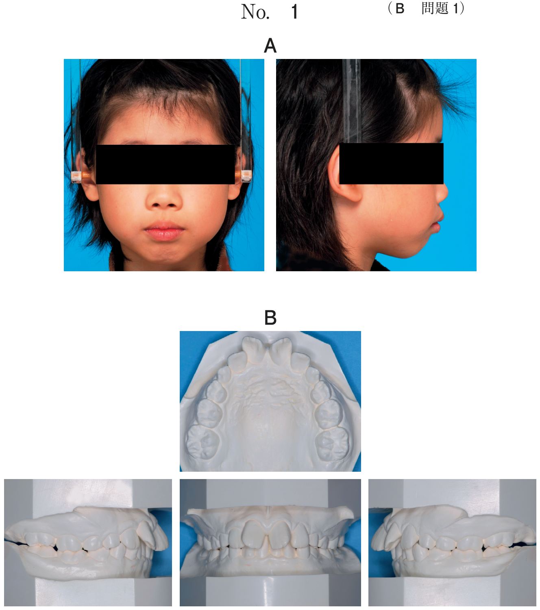

| 器材 | 用途 |
|---|---|
| 印象用コーピング | インプラント体に装着して印象採得 |
| インプラントアナログ | 模型製作時に使用（プラットフォーム形態を再現） |
| ガイドピン | オープントレー法でコーピングを固定 |
| オープントレー | 開口部のある個人トレー |
| シリコーンゴム | 周囲軟組織形態の再現 |
| 比較項目 | クローズドトレー法 | オープントレー法 |
|---|---|---|
| 印象術式 | 単純 | 複雑 |
| 印象精度 | 劣る | 優れる |
| 印象材の寸法安定性 | 劣る | 優れる |
| インプラント体の傾斜 | 許容しにくい | 許容しやすい |
| 臼歯部・開口障害への対応 | 可能 | 困難 |
| トレーの特徴 | 通常トレー | 開口部あり |
| 印象用コーピング | 口腔内に残る | 印象内に取り込まれる |
※オープントレーの開口部は、ガイドピンにアクセスして印象用コーピングを操作するため
インプラントの印象採得において、オープントレー法がクローズドトレー法に比べて有利なのはどれか。2つ選べ。
【解説】オープントレー法では印象用コーピングが印象内に取り込まれるため、印象材の寸法安定性が良い。また、インプラント体の傾斜に対する許容が大きい。術式の簡便さ、開口量が少ない場合への適用はクローズドトレー法が有利。
59歳の女性。右側での咀嚼困難を主訴として来院した。診察の結果、下顎右側にインプラント義歯による補綴装置を製作することとした。下顎右側第一・第二大臼歯相当部にインプラントを植立後、上部構造製作のための精密印象採得を行うこととした。印象採得前の口腔内写真（別冊No.3）を別に示す。
準備する器材はどれか。2つ選べ。
【解説】インプラントの印象採得にはオープントレー（開口部のある個人トレー）と印象用コーピングが必要。歯肉圧排糸は天然歯の印象採得時に使用。カバースクリューは埋入手術後の治癒期間に使用。
インプラント補綴装置製作のために印象採得を行うこととした。口腔内写真（別冊No.15A）と個人トレーの写真（別冊No.15B）とを別に示す。
矢印の構造を付与する目的はどれか。1つ選べ。

【解説】オープントレーの開口部（穴）は、印象用パーツ（ガイドピン）の操作のために設けられている。印象採得後にガイドピンを緩めることで、印象用コーピングを印象内に残したままトレーを撤去できる。
インプラント上部構造製作のための印象採得を行った後、口腔内から撤去した印象体について、次に行う処置はどれか。1つ選べ。
【解説】オープントレー法で印象採得後、まずインプラントアナログを連結する。アナログはインプラント体のプラットフォーム形態を再現しており、これを連結してから石膏注入を行う。
60歳の男性。上顎臼歯の欠損による咀嚼不全を主訴として来院した。インプラント補綴治療を行うこととした。オープントレー法による印象採得時の口腔内写真と技工操作の写真（別冊No.5）を別に示す。
術式の進行順で正しいのはどれか。1つ選べ。

【解説】オープントレー法の手順：ア（印象用コーピング装着）→エ（印象採得）→オ（トレー撤去、コーピングは印象内）→イ（アナログ連結）→ウ（石膏注入）の順に進める。